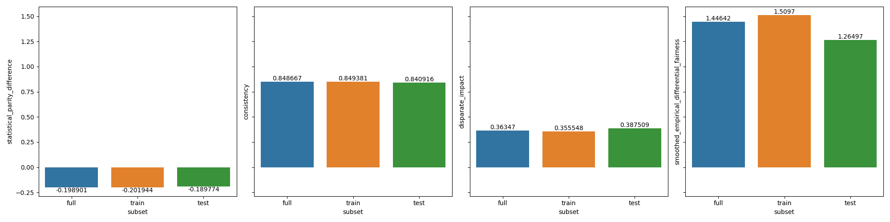
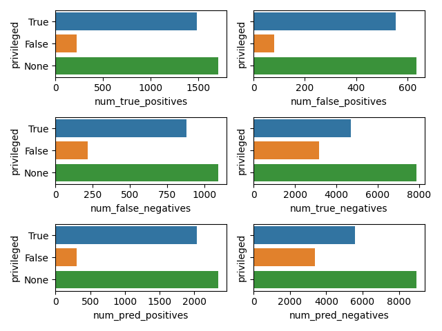
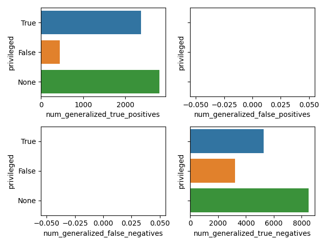
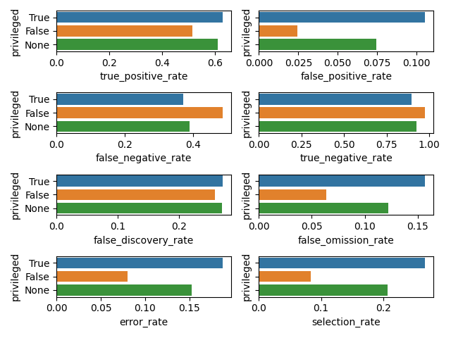
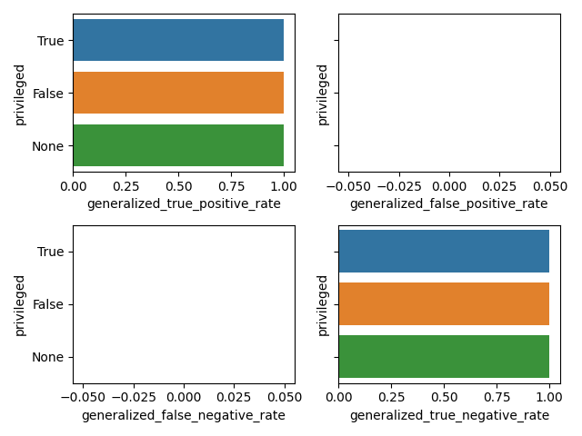
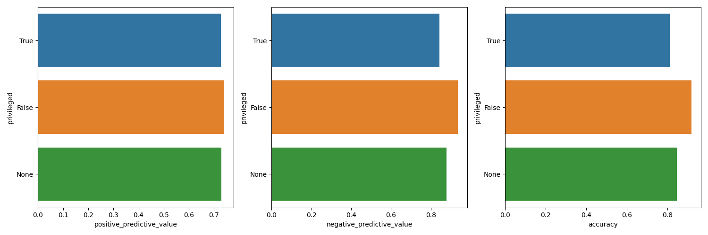

Adult
Table of Contents
In this file we analyse the results obtained from computing all
BinaryLabelDatasetMetric & ClassificationMetric for the adult
dataset with a LinearRegression model. The results are stored in
adult.csv which is what we will analyse here.
1. Init
In this section we perform some sanity checks, load the necessary modules & the dataset.
import pandas as pd
import numpy as np
pd.set_option('display.max_columns', None)
pd.set_option('display.max_colwidth', None)
pd.set_option('display.max_rows', None)
import matplotlib
matplotlib.use('Agg') # non-interactive backend
import matplotlib.pyplot as plt
import seaborn as sns
import os
import sys
ROOTDIR = os.path.abspath(os.path.join(os.getcwd(), '..'))
DATADIR = os.path.join(ROOTDIR, 'data')
sys.path.insert(0, ROOTDIR)
from src import utils
from src.utils import data_metrics_columns, model_metrics_columns
adult = pd.read_csv(os.path.join(DATADIR, 'adult.csv'))
2. Priliminary analysis
In this section we conduct some priliminary analysis of the dataset.
adult.head()
dataset subset model privileged privileged_groups unprivileged_groups \
0 adult full NaN True [{'sex': 1}] [{'sex': 0}]
1 adult full NaN False [{'sex': 1}] [{'sex': 0}]
2 adult full NaN NaN [{'sex': 1}] [{'sex': 0}]
3 adult train NaN True [{'sex': 1}] [{'sex': 0}]
4 adult train NaN False [{'sex': 1}] [{'sex': 0}]
num_positives num_negatives base_rate disparate_impact \
0 9539.0 20988.0 0.312477 NaN
1 1669.0 13026.0 0.113576 NaN
2 11208.0 34014.0 0.247844 0.36347
3 7174.0 15720.0 0.313357 NaN
4 1228.0 9794.0 0.111414 NaN
statistical_parity_difference consistency \
0 NaN NaN
1 NaN NaN
2 -0.198901 [0.84866658]
3 NaN NaN
4 NaN NaN
smoothed_empirical_differential_fairness num_true_positives \
0 NaN NaN
1 NaN NaN
2 1.446422 NaN
3 NaN NaN
4 NaN NaN
num_false_positives num_false_negatives num_true_negatives \
0 NaN NaN NaN
1 NaN NaN NaN
2 NaN NaN NaN
3 NaN NaN NaN
4 NaN NaN NaN
num_generalized_true_positives num_generalized_false_positives \
0 NaN NaN
1 NaN NaN
2 NaN NaN
3 NaN NaN
4 NaN NaN
num_generalized_false_negatives num_generalized_true_negatives \
0 NaN NaN
1 NaN NaN
2 NaN NaN
3 NaN NaN
4 NaN NaN
true_positive_rate false_positive_rate false_negative_rate \
0 NaN NaN NaN
1 NaN NaN NaN
2 NaN NaN NaN
3 NaN NaN NaN
4 NaN NaN NaN
true_negative_rate generalized_true_positive_rate \
0 NaN NaN
1 NaN NaN
2 NaN NaN
3 NaN NaN
4 NaN NaN
generalized_false_positive_rate generalized_false_negative_rate \
0 NaN NaN
1 NaN NaN
2 NaN NaN
3 NaN NaN
4 NaN NaN
generalized_true_negative_rate positive_predictive_value \
0 NaN NaN
1 NaN NaN
2 NaN NaN
3 NaN NaN
4 NaN NaN
false_discovery_rate false_omission_rate negative_predictive_value \
0 NaN NaN NaN
1 NaN NaN NaN
2 NaN NaN NaN
3 NaN NaN NaN
4 NaN NaN NaN
accuracy error_rate true_positive_rate_difference \
0 NaN NaN NaN
1 NaN NaN NaN
2 NaN NaN NaN
3 NaN NaN NaN
4 NaN NaN NaN
false_positive_rate_difference false_negative_rate_difference \
0 NaN NaN
1 NaN NaN
2 NaN NaN
3 NaN NaN
4 NaN NaN
false_omission_rate_difference false_discovery_rate_difference \
0 NaN NaN
1 NaN NaN
2 NaN NaN
3 NaN NaN
4 NaN NaN
false_positive_rate_ratio false_negative_rate_ratio \
0 NaN NaN
1 NaN NaN
2 NaN NaN
3 NaN NaN
4 NaN NaN
false_omission_rate_ratio false_discovery_rate_ratio \
0 NaN NaN
1 NaN NaN
2 NaN NaN
3 NaN NaN
4 NaN NaN
average_odds_difference average_abs_odds_difference \
0 NaN NaN
1 NaN NaN
2 NaN NaN
3 NaN NaN
4 NaN NaN
error_rate_difference error_rate_ratio num_pred_positives \
0 NaN NaN NaN
1 NaN NaN NaN
2 NaN NaN NaN
3 NaN NaN NaN
4 NaN NaN NaN
num_pred_negatives selection_rate generalized_entropy_index \
0 NaN NaN NaN
1 NaN NaN NaN
2 NaN NaN NaN
3 NaN NaN NaN
4 NaN NaN NaN
between_all_groups_generalized_entropy_index \
0 NaN
1 NaN
2 NaN
3 NaN
4 NaN
between_group_generalized_entropy_index theil_index \
0 NaN NaN
1 NaN NaN
2 NaN NaN
3 NaN NaN
4 NaN NaN
coefficient_of_variation between_group_theil_index \
0 NaN NaN
1 NaN NaN
2 NaN NaN
3 NaN NaN
4 NaN NaN
between_group_coefficient_of_variation between_all_groups_theil_index \
0 NaN NaN
1 NaN NaN
2 NaN NaN
3 NaN NaN
4 NaN NaN
between_all_groups_coefficient_of_variation \
0 NaN
1 NaN
2 NaN
3 NaN
4 NaN
differential_fairness_bias_amplification
0 NaN
1 NaN
2 NaN
3 NaN
4 NaN
adult.tail()
dataset subset model privileged privileged_groups \
103 adult test NaN False [{'sex': 1}, {'race': 1}]
104 adult test NaN NaN [{'sex': 1}, {'race': 1}]
105 adult train lr True [{'sex': 1}, {'race': 1}]
106 adult train lr False [{'sex': 1}, {'race': 1}]
107 adult train lr NaN [{'sex': 1}, {'race': 1}]
unprivileged_groups num_positives num_negatives base_rate \
103 [{'sex': 0, 'race': 0}] 62.0 625.0 0.090247
104 [{'sex': 0, 'race': 0}] 2806.0 8500.0 0.248187
105 [{'sex': 0, 'race': 0}] NaN NaN NaN
106 [{'sex': 0, 'race': 0}] NaN NaN NaN
107 [{'sex': 0, 'race': 0}] NaN NaN NaN
disparate_impact statistical_parity_difference consistency \
103 NaN NaN NaN
104 0.349248 -0.168157 [0.84091633]
105 NaN NaN NaN
106 NaN NaN NaN
107 0.213661 -0.171426 NaN
smoothed_empirical_differential_fairness num_true_positives \
103 NaN NaN
104 1.264974 NaN
105 NaN 1688.0
106 NaN 25.0
107 NaN 1713.0
num_false_positives num_false_negatives num_true_negatives \
103 NaN NaN NaN
104 NaN NaN NaN
105 627.0 1056.0 7248.0
106 7.0 37.0 618.0
107 634.0 1093.0 7866.0
num_generalized_true_positives num_generalized_false_positives \
103 NaN NaN
104 NaN NaN
105 2744.0 0.0
106 62.0 0.0
107 2806.0 0.0
num_generalized_false_negatives num_generalized_true_negatives \
103 NaN NaN
104 NaN NaN
105 0.0 7875.0
106 0.0 625.0
107 0.0 8500.0
true_positive_rate false_positive_rate false_negative_rate \
103 NaN NaN NaN
104 NaN NaN NaN
105 0.615160 0.079619 0.384840
106 0.403226 0.011200 0.596774
107 0.610478 0.074588 0.389522
true_negative_rate generalized_true_positive_rate \
103 NaN NaN
104 NaN NaN
105 0.920381 1.0
106 0.988800 1.0
107 0.925412 1.0
generalized_false_positive_rate generalized_false_negative_rate \
103 NaN NaN
104 NaN NaN
105 0.0 0.0
106 0.0 0.0
107 0.0 0.0
generalized_true_negative_rate positive_predictive_value \
103 NaN NaN
104 NaN NaN
105 1.0 0.729158
106 1.0 0.781250
107 1.0 0.729868
false_discovery_rate false_omission_rate negative_predictive_value \
103 NaN NaN NaN
104 NaN NaN NaN
105 0.270842 0.127168 0.872832
106 0.218750 0.056489 0.943511
107 0.270132 0.122000 0.878000
accuracy error_rate true_positive_rate_difference \
103 NaN NaN NaN
104 NaN NaN NaN
105 0.841511 0.158489 NaN
106 0.935953 0.064047 NaN
107 0.847249 0.152751 -0.211935
false_positive_rate_difference false_negative_rate_difference \
103 NaN NaN
104 NaN NaN
105 NaN NaN
106 NaN NaN
107 -0.068419 0.211935
false_omission_rate_difference false_discovery_rate_difference \
103 NaN NaN
104 NaN NaN
105 NaN NaN
106 NaN NaN
107 -0.070679 -0.052092
false_positive_rate_ratio false_negative_rate_ratio \
103 NaN NaN
104 NaN NaN
105 NaN NaN
106 NaN NaN
107 NaN NaN
false_omission_rate_ratio false_discovery_rate_ratio \
103 NaN NaN
104 NaN NaN
105 NaN NaN
106 NaN NaN
107 NaN NaN
average_odds_difference average_abs_odds_difference \
103 NaN NaN
104 NaN NaN
105 NaN NaN
106 NaN NaN
107 -0.140177 0.140177
error_rate_difference error_rate_ratio num_pred_positives \
103 NaN NaN NaN
104 NaN NaN NaN
105 NaN NaN 2315.0
106 NaN NaN 32.0
107 -0.094443 0.404106 2347.0
num_pred_negatives selection_rate generalized_entropy_index \
103 NaN NaN NaN
104 NaN NaN NaN
105 8304.0 0.218005 NaN
106 655.0 0.046579 NaN
107 8959.0 0.207589 0.082081
between_all_groups_generalized_entropy_index \
103 NaN
104 NaN
105 NaN
106 NaN
107 0.00001
between_group_generalized_entropy_index theil_index \
103 NaN NaN
104 NaN NaN
105 NaN NaN
106 NaN NaN
107 3.312668e-07 0.122473
coefficient_of_variation between_group_theil_index \
103 NaN NaN
104 NaN NaN
105 NaN NaN
106 NaN NaN
107 0.572994 3.315978e-07
between_group_coefficient_of_variation between_all_groups_theil_index \
103 NaN NaN
104 NaN NaN
105 NaN NaN
106 NaN NaN
107 0.001151 0.00001
between_all_groups_coefficient_of_variation \
103 NaN
104 NaN
105 NaN
106 NaN
107 0.00646
differential_fairness_bias_amplification
103 NaN
104 NaN
105 NaN
106 NaN
107 0.508061
adult.shape
| 108 | 61 |
adult.dtypes
dataset object subset object model object privileged object privileged_groups object unprivileged_groups object num_positives float64 num_negatives float64 base_rate float64 disparate_impact float64 statistical_parity_difference float64 consistency object smoothed_empirical_differential_fairness float64 num_true_positives float64 num_false_positives float64 num_false_negatives float64 num_true_negatives float64 num_generalized_true_positives float64 num_generalized_false_positives float64 num_generalized_false_negatives float64 num_generalized_true_negatives float64 true_positive_rate float64 false_positive_rate float64 false_negative_rate float64 true_negative_rate float64 generalized_true_positive_rate float64 generalized_false_positive_rate float64 generalized_false_negative_rate float64 generalized_true_negative_rate float64 positive_predictive_value float64 false_discovery_rate float64 false_omission_rate float64 negative_predictive_value float64 accuracy float64 error_rate float64 true_positive_rate_difference float64 false_positive_rate_difference float64 false_negative_rate_difference float64 false_omission_rate_difference float64 false_discovery_rate_difference float64 false_positive_rate_ratio float64 false_negative_rate_ratio float64 false_omission_rate_ratio float64 false_discovery_rate_ratio float64 average_odds_difference float64 average_abs_odds_difference float64 error_rate_difference float64 error_rate_ratio float64 num_pred_positives float64 num_pred_negatives float64 selection_rate float64 generalized_entropy_index float64 between_all_groups_generalized_entropy_index float64 between_group_generalized_entropy_index float64 theil_index float64 coefficient_of_variation float64 between_group_theil_index float64 between_group_coefficient_of_variation float64 between_all_groups_theil_index float64 between_all_groups_coefficient_of_variation float64 differential_fairness_bias_amplification float64 dtype: object
adult.describe(include='all')
dataset subset model privileged privileged_groups \
count 108 108 27 72 108
unique 1 3 1 2 4
top adult train lr True [{'sex': 1, 'race': 1}]
freq 108 54 27 36 48
mean NaN NaN NaN NaN NaN
std NaN NaN NaN NaN NaN
min NaN NaN NaN NaN NaN
25% NaN NaN NaN NaN NaN
50% NaN NaN NaN NaN NaN
75% NaN NaN NaN NaN NaN
max NaN NaN NaN NaN NaN
unprivileged_groups num_positives num_negatives base_rate \
count 108 81.000000 81.000000 81.000000
unique 4 NaN NaN NaN
top [{'sex': 0, 'race': 0}] NaN NaN NaN
freq 48 NaN NaN NaN
mean NaN 4815.259259 14143.407407 0.219777
std NaN 4047.360371 11004.419414 0.083926
min NaN 62.000000 625.000000 0.071529
25% NaN 1001.000000 4579.000000 0.138999
50% NaN 2806.000000 9794.000000 0.247844
75% NaN 8402.000000 25514.000000 0.262371
max NaN 11208.000000 34014.000000 0.324600
disparate_impact statistical_parity_difference consistency \
count 36.000000 36.000000 27
unique NaN NaN 3
top NaN NaN [0.84866658]
freq NaN NaN 9
mean 0.356000 -0.186147 NaN
std 0.122029 0.039616 NaN
min 0.167467 -0.253071 NaN
25% 0.274857 -0.211046 NaN
50% 0.346809 -0.188478 NaN
75% 0.420402 -0.170609 NaN
max 0.618126 -0.095887 NaN
smoothed_empirical_differential_fairness num_true_positives \
count 27.000000 27.000000
unique NaN NaN
top NaN NaN
freq NaN NaN
mean 1.407032 1107.555556
std 0.105694 717.781536
min 1.264974 25.000000
25% 1.264974 226.000000
50% 1.446422 1487.000000
75% 1.509699 1713.000000
max 1.509699 1713.000000
num_false_positives num_false_negatives num_true_negatives \
count 27.000000 27.000000 27.000000
unique NaN NaN NaN
top NaN NaN NaN
freq NaN NaN NaN
mean 408.555556 699.666667 4891.888889
std 264.043751 430.939492 2777.852772
min 7.000000 37.000000 618.000000
25% 79.000000 215.000000 3153.000000
50% 555.000000 878.000000 4713.000000
75% 634.000000 1093.000000 7866.000000
max 634.000000 1093.000000 7866.000000
num_generalized_true_positives num_generalized_false_positives \
count 27.000000 27.0
unique NaN NaN
top NaN NaN
freq NaN NaN
mean 1807.222222 0.0
std 1147.614326 0.0
min 62.000000 0.0
25% 441.000000 0.0
50% 2365.000000 0.0
75% 2806.000000 0.0
max 2806.000000 0.0
num_generalized_false_negatives num_generalized_true_negatives \
count 27.0 27.000000
unique NaN NaN
top NaN NaN
freq NaN NaN
mean 0.0 5300.444444
std 0.0 3023.242049
min 0.0 625.000000
25% 0.0 3232.000000
50% 0.0 5268.000000
75% 0.0 8500.000000
max 0.0 8500.000000
true_positive_rate false_positive_rate false_negative_rate \
count 27.000000 27.000000 27.000000
unique NaN NaN NaN
top NaN NaN NaN
freq NaN NaN NaN
mean 0.569007 0.065919 0.430993
std 0.080386 0.033378 0.080386
min 0.403226 0.011200 0.365854
25% 0.527559 0.040680 0.381270
50% 0.610478 0.074588 0.389522
75% 0.618730 0.079609 0.472441
max 0.634146 0.109194 0.596774
true_negative_rate generalized_true_positive_rate \
count 27.000000 27.0
unique NaN NaN
top NaN NaN
freq NaN NaN
mean 0.934081 1.0
std 0.033378 0.0
min 0.890806 1.0
25% 0.920391 1.0
50% 0.925412 1.0
75% 0.959320 1.0
max 0.988800 1.0
generalized_false_positive_rate generalized_false_negative_rate \
count 27.0 27.0
unique NaN NaN
top NaN NaN
freq NaN NaN
mean 0.0 0.0
std 0.0 0.0
min 0.0 0.0
25% 0.0 0.0
50% 0.0 0.0
75% 0.0 0.0
max 0.0 0.0
generalized_true_negative_rate positive_predictive_value \
count 27.0 27.000000
unique NaN NaN
top NaN NaN
freq NaN NaN
mean 1.0 0.735044
std 0.0 0.023775
min 1.0 0.683673
25% 1.0 0.729868
50% 1.0 0.729868
75% 1.0 0.734077
max 1.0 0.781250
false_discovery_rate false_omission_rate negative_predictive_value \
count 27.000000 27.000000 27.000000
unique NaN NaN NaN
top NaN NaN NaN
freq NaN NaN NaN
mean 0.264956 0.112951 0.887049
std 0.023775 0.037125 0.037125
min 0.218750 0.056489 0.836890
25% 0.265923 0.080207 0.871754
50% 0.270132 0.122000 0.878000
75% 0.270132 0.128246 0.919793
max 0.316327 0.163110 0.943511
accuracy error_rate true_positive_rate_difference \
count 27.000000 27.000000 9.000000
unique NaN NaN NaN
top NaN NaN NaN
freq NaN NaN NaN
mean 0.861611 0.138389 -0.158280
std 0.044362 0.044362 0.060290
min 0.808205 0.064047 -0.230921
25% 0.841343 0.105467 -0.215505
50% 0.847249 0.152751 -0.121675
75% 0.894533 0.158657 -0.106587
max 0.935953 0.191795 -0.091171
false_positive_rate_difference false_negative_rate_difference \
count 9.000000 9.000000
unique NaN NaN
top NaN NaN
freq NaN NaN
mean -0.073786 0.158280
std 0.019626 0.060290
min -0.097994 0.091171
25% -0.084751 0.106587
50% -0.075019 0.121675
75% -0.068399 0.215505
max -0.032415 0.230921
false_omission_rate_difference false_discovery_rate_difference \
count 9.000000 9.000000
unique NaN NaN
top NaN NaN
freq NaN NaN
mean -0.083186 -0.011093
std 0.020617 0.042638
min -0.106622 -0.053042
25% -0.099274 -0.047491
50% -0.090161 -0.012776
75% -0.071757 0.019474
max -0.040782 0.050404
false_positive_rate_ratio false_negative_rate_ratio \
count 0.0 0.0
unique NaN NaN
top NaN NaN
freq NaN NaN
mean NaN NaN
std NaN NaN
min NaN NaN
25% NaN NaN
50% NaN NaN
75% NaN NaN
max NaN NaN
false_omission_rate_ratio false_discovery_rate_ratio \
count 0.0 0.0
unique NaN NaN
top NaN NaN
freq NaN NaN
mean NaN NaN
std NaN NaN
min NaN NaN
25% NaN NaN
50% NaN NaN
75% NaN NaN
max NaN NaN
average_odds_difference average_abs_odds_difference \
count 9.000000 9.000000
unique NaN NaN
top NaN NaN
freq NaN NaN
mean -0.116033 0.116033
std 0.036427 0.036427
min -0.164457 0.061793
25% -0.141952 0.089970
50% -0.103213 0.103213
75% -0.089970 0.141952
max -0.061793 0.164457
error_rate_difference error_rate_ratio num_pred_positives \
count 9.000000 9.000000 27.000000
unique NaN NaN NaN
top NaN NaN NaN
freq NaN NaN NaN
mean -0.097242 0.461993 1516.111111
std 0.026017 0.130032 981.766514
min -0.127748 0.333932 32.000000
25% -0.111751 0.403680 305.000000
50% -0.096933 0.417339 2042.000000
75% -0.094443 0.494599 2347.000000
max -0.042585 0.731588 2347.000000
num_pred_negatives selection_rate generalized_entropy_index \
count 27.000000 27.000000 9.000000
unique NaN NaN NaN
top NaN NaN NaN
freq NaN NaN NaN
mean 5591.555556 0.180780 0.082081
std 3190.631506 0.080254 0.000000
min 655.000000 0.046579 0.082081
25% 3368.000000 0.113993 0.082081
50% 5591.000000 0.207589 0.082081
75% 8959.000000 0.220887 0.082081
max 8959.000000 0.278140 0.082081
between_all_groups_generalized_entropy_index \
count 9.00000
unique NaN
top NaN
freq NaN
mean 0.00001
std 0.00000
min 0.00001
25% 0.00001
50% 0.00001
75% 0.00001
max 0.00001
between_group_generalized_entropy_index theil_index \
count 9.000000e+00 9.000000e+00
unique NaN NaN
top NaN NaN
freq NaN NaN
mean 7.814894e-02 1.224730e-01
std 1.003529e-01 1.471962e-17
min 3.312668e-07 1.224730e-01
25% 3.333221e-06 1.224730e-01
50% 4.225442e-02 1.224730e-01
75% 1.794472e-01 1.224730e-01
max 2.599140e-01 1.224730e-01
coefficient_of_variation between_group_theil_index \
count 9.000000 9.000000e+00
unique NaN NaN
top NaN NaN
freq NaN NaN
mean 0.572994 1.326906e-01
std 0.000000 1.650846e-01
min 0.572994 3.315978e-07
25% 0.572994 3.331081e-06
50% 0.572994 8.112700e-02
75% 0.572994 3.066714e-01
max 0.572994 4.185971e-01
between_group_coefficient_of_variation \
count 9.000000
unique NaN
top NaN
freq NaN
mean 0.394316
std 0.420416
min 0.001151
25% 0.003651
50% 0.411118
75% 0.847224
max 1.019635
between_all_groups_theil_index \
count 9.00000
unique NaN
top NaN
freq NaN
mean 0.00001
std 0.00000
min 0.00001
25% 0.00001
50% 0.00001
75% 0.00001
max 0.00001
between_all_groups_coefficient_of_variation \
count 9.00000
unique NaN
top NaN
freq NaN
mean 0.00646
std 0.00000
min 0.00646
25% 0.00646
50% 0.00646
75% 0.00646
max 0.00646
differential_fairness_bias_amplification
count 9.000000
unique NaN
top NaN
freq NaN
mean 0.508061
std 0.000000
min 0.508061
25% 0.508061
50% 0.508061
75% 0.508061
max 0.508061
3. Cleanup
In this section we perform some cleaning which is necessary for the analysis to follow.
Lets fill the missing values in privileged with 'None' to denote
that the data was not conditioned on any privileged or unprivileged
group.
adult['privileged'] = adult['privileged'].fillna('None')
adult['privileged'].isna().any()
False
Lets convert the consistency column to a float dtype.
adult['consistency'] = adult['consistency'].str.strip(to_strip='[]')
adult['consistency'] = adult['consistency'].astype('float')
adult['consistency'].dtypes
float64
4. Analysis of data metrics
In this section we analyse the dataset metrics. Following are a set of questions we want to answer:
- What is the distribution of the fairness metrics amongst the different subsets?
- What is the distribution of the fairness metrics when conditions on
{un,}privileged_groups? - What is the distribution of the fairness metrics when we combine the above two?
metrics = adult[adult['model'].isna()] # data metrics are computed without a model cols = list(set(adult.columns) - set(model_metrics_columns)) metrics = metrics[cols] metrics.shape
(81, 12)
metrics.dtypes
privileged_groups object dataset object num_negatives float64 subset object unprivileged_groups object num_positives float64 statistical_parity_difference float64 privileged object consistency float64 smoothed_empirical_differential_fairness float64 base_rate float64 disparate_impact float64 dtype: object
metrics.head()
privileged_groups dataset num_negatives subset unprivileged_groups \
0 [{'sex': 1}] adult 20988.0 full [{'sex': 0}]
1 [{'sex': 1}] adult 13026.0 full [{'sex': 0}]
2 [{'sex': 1}] adult 34014.0 full [{'sex': 0}]
3 [{'sex': 1}] adult 15720.0 train [{'sex': 0}]
4 [{'sex': 1}] adult 9794.0 train [{'sex': 0}]
num_positives statistical_parity_difference privileged consistency \
0 9539.0 NaN True NaN
1 1669.0 NaN False NaN
2 11208.0 -0.198901 None 0.848667
3 7174.0 NaN True NaN
4 1228.0 NaN False NaN
smoothed_empirical_differential_fairness base_rate disparate_impact
0 NaN 0.312477 NaN
1 NaN 0.113576 NaN
2 1.446422 0.247844 0.36347
3 NaN 0.313357 NaN
4 NaN 0.111414 NaN
metrics.isna().any()
privileged_groups False dataset False num_negatives False subset False unprivileged_groups False num_positives False statistical_parity_difference True privileged False consistency True smoothed_empirical_differential_fairness True base_rate False disparate_impact True dtype: bool
metrics['privileged'].value_counts()
True 27 False 27 None 27 Name: privileged, dtype: int64
metrics['subset'].value_counts()
full 27 train 27 test 27 Name: subset, dtype: int64
So we have data across 3 datasets (full, test & train), 3 different
privileged conditions (True, False & None). And for each of these 9
combinations, we have 9 combinations of {un,}privileged_groups. Lets
look at these combinations in a bit more detail.
metrics['privileged_groups'].value_counts()
[{'sex': 1, 'race': 1}] 36 [{'sex': 1}] 18 [{'race': 1}] 18 [{'sex': 1}, {'race': 1}] 9 Name: privilegedgroups, dtype: int64
metrics['unprivileged_groups'].value_counts()
[{'sex': 0, 'race': 0}] 36 [{'sex': 0}] 18 [{'race': 0}] 18 [{'sex': 0}, {'race': 0}] 9 Name: unprivilegedgroups, dtype: int64
[{'sex': 0, 'race': 0}] 36 [{'sex': 0}] 18 [{'race': 0}] 18 [{'sex': 0}, {'race': 0}] 9 Name: unprivilegedgroups, dtype: int64 [{'sex': 0, 'race': 0}] 36 [{'sex': 0}] 18 [{'race': 0}] 18 [{'sex': 0}, {'race': 0}] 9 Name: unprivilegedgroups, dtype: int64 [{'sex': 0, 'race': 0}] 36 [{'sex': 0}] 18 [{'race': 0}] 18 [{'sex': 0}, {'race': 0}] 9 Name: unprivilegedgroups, dtype: int64
4.1. Analysis of single protected attribute sex
Lets consider a single protected attribute sex first. We will create
a plot for all the metrics across the various subsets & conditions.
sex_metrics = metrics[metrics['privileged_groups'] == "[{'sex': 1}]"]
sex_metrics = sex_metrics[sex_metrics['unprivileged_groups'] == "[{'sex': 0}]"]
sex_metrics = sex_metrics.drop(columns=['unprivileged_groups', 'privileged_groups', 'dataset'])
sex_metrics
num_negatives subset num_positives statistical_parity_difference \ 0 20988.0 full 9539.0 NaN 1 13026.0 full 1669.0 NaN 2 34014.0 full 11208.0 -0.198901 3 15720.0 train 7174.0 NaN 4 9794.0 train 1228.0 NaN 5 25514.0 train 8402.0 -0.201944 6 5268.0 test 2365.0 NaN 7 3232.0 test 441.0 NaN 8 8500.0 test 2806.0 -0.189774 privileged consistency smoothed_empirical_differential_fairness \ 0 True NaN NaN 1 False NaN NaN 2 None 0.848667 1.446422 3 True NaN NaN 4 False NaN NaN 5 None 0.849381 1.509699 6 True NaN NaN 7 False NaN NaN 8 None 0.840916 1.264974 base_rate disparate_impact 0 0.312477 NaN 1 0.113576 NaN 2 0.247844 0.363470 3 0.313357 NaN 4 0.111414 NaN 5 0.247730 0.355548 6 0.309839 NaN 7 0.120065 NaN 8 0.248187 0.387509
The following is a plot of all metrics which can be conditioned (ie.
privileged column is not empty). This includes num_positives,
num_negatives & base_rate.
name = 'adult_barplot_prot-sex_conditioned-metrics'
fig, axs = plt.subplots(1, 3, figsize=(15, 5))
sns.barplot(data=sex_metrics,
y='num_positives',
x='subset',
hue='privileged',
hue_order=['None', True, False],
ax=axs[0])
sns.barplot(data=sex_metrics,
y='num_negatives',
x='subset',
hue='privileged',
hue_order=['None', True, False],
ax=axs[1])
sns.barplot(data=sex_metrics,
y='base_rate',
x='subset',
hue='privileged',
hue_order=['None', True, False],
ax=axs[2])
# label the bars with the value, taken from
# <https://stackoverflow.com/a/68323374>
for container in axs[0].containers:
axs[0].bar_label(container)
for container in axs[1].containers:
axs[1].bar_label(container)
for container in axs[2].containers:
axs[2].bar_label(container)
utils.savefig(fig, name)

The following is a plot of all metrics which can not be conditioned
(ie. privileged column is missing). This includes
statistical_parity_difference, consistency, disparate_impact &
smoothed_empirical_differential_fairness.
name = 'adult_barplot_prot-sex_unconditioned-metrics'
fig, axs = plt.subplots(1, 4, sharey=True, figsize=(20, 5))
sns.barplot(data=sex_metrics,
y='statistical_parity_difference',
x='subset',
ax=axs[0])
sns.barplot(data=sex_metrics,
y='consistency',
x='subset',
ax=axs[1])
sns.barplot(data=sex_metrics,
y='disparate_impact',
x='subset',
ax=axs[2])
sns.barplot(data=sex_metrics,
y='smoothed_empirical_differential_fairness',
x='subset',
ax=axs[3])
# label the bars with the value, taken from
# <https://stackoverflow.com/a/68323374>
for container in axs[0].containers:
axs[0].bar_label(container)
for container in axs[1].containers:
axs[1].bar_label(container)
for container in axs[2].containers:
axs[2].bar_label(container)
for container in axs[3].containers:
axs[3].bar_label(container)
utils.savefig(fig, name)

5. Analysis of model metrics
In this section we analyse the model metrics.
metrics = adult[adult['model'].notna()] cols = list(set(adult.columns) - set(data_metrics_columns)) metrics = metrics[cols] metrics.shape
(27, 56)
metrics.dtypes
generalized_false_positive_rate float64 model object num_true_positives float64 false_positive_rate_ratio float64 error_rate_difference float64 average_abs_odds_difference float64 num_pred_negatives float64 theil_index float64 differential_fairness_bias_amplification float64 num_true_negatives float64 accuracy float64 generalized_false_negative_rate float64 false_negative_rate_ratio float64 positive_predictive_value float64 num_generalized_false_positives float64 true_negative_rate float64 num_pred_positives float64 between_group_coefficient_of_variation float64 privileged_groups object false_omission_rate_ratio float64 true_positive_rate float64 negative_predictive_value float64 false_discovery_rate_difference float64 num_false_positives float64 subset object error_rate_ratio float64 false_positive_rate float64 generalized_true_positive_rate float64 statistical_parity_difference float64 true_positive_rate_difference float64 false_positive_rate_difference float64 coefficient_of_variation float64 generalized_true_negative_rate float64 num_false_negatives float64 between_all_groups_coefficient_of_variation float64 average_odds_difference float64 between_all_groups_generalized_entropy_index float64 between_group_theil_index float64 false_negative_rate_difference float64 false_omission_rate float64 selection_rate float64 between_all_groups_theil_index float64 between_group_generalized_entropy_index float64 dataset object num_generalized_false_negatives float64 false_discovery_rate_ratio float64 false_discovery_rate float64 num_generalized_true_negatives float64 generalized_entropy_index float64 unprivileged_groups object privileged object false_negative_rate float64 num_generalized_true_positives float64 error_rate float64 disparate_impact float64 false_omission_rate_difference float64 dtype: object
metrics.isna().any()
generalized_false_positive_rate False model False num_true_positives False false_positive_rate_ratio True error_rate_difference True average_abs_odds_difference True num_pred_negatives False theil_index True differential_fairness_bias_amplification True num_true_negatives False accuracy False generalized_false_negative_rate False false_negative_rate_ratio True positive_predictive_value False num_generalized_false_positives False true_negative_rate False num_pred_positives False between_group_coefficient_of_variation True privileged_groups False false_omission_rate_ratio True true_positive_rate False negative_predictive_value False false_discovery_rate_difference True num_false_positives False subset False error_rate_ratio True false_positive_rate False generalized_true_positive_rate False statistical_parity_difference True true_positive_rate_difference True false_positive_rate_difference True coefficient_of_variation True generalized_true_negative_rate False num_false_negatives False between_all_groups_coefficient_of_variation True average_odds_difference True between_all_groups_generalized_entropy_index True between_group_theil_index True false_negative_rate_difference True false_omission_rate False selection_rate False between_all_groups_theil_index True between_group_generalized_entropy_index True dataset False num_generalized_false_negatives False false_discovery_rate_ratio True false_discovery_rate False num_generalized_true_negatives False generalized_entropy_index True unprivileged_groups False privileged False false_negative_rate False num_generalized_true_positives False error_rate False disparate_impact True false_omission_rate_difference True dtype: bool
metrics['privileged'].value_counts()
True 9 False 9 None 9 Name: privileged, dtype: int64
metrics['subset'].value_counts()
train 27 Name: subset, dtype: int64
The subset column is useless & can be dropped. We only have
variation in the privileged & {un,}privileged_groups columns.
5.1. Analysis of single protected attribute sex
As with the data metrics analysis, we consider a single protected attribute first.
sex_metrics = metrics[metrics['privileged_groups'] == "[{'sex': 1}]"]
sex_metrics = sex_metrics[sex_metrics['unprivileged_groups'] == "[{'sex': 0}]"]
sex_metrics = sex_metrics.drop(columns=['unprivileged_groups',
'privileged_groups', 'dataset',
'subset'])
sex_metrics
generalized_false_positive_rate model num_true_positives \
9 0.0 lr 1487.0
10 0.0 lr 226.0
11 0.0 lr 1713.0
false_positive_rate_ratio error_rate_difference \
9 NaN NaN
10 NaN NaN
11 NaN -0.107694
average_abs_odds_difference num_pred_negatives theil_index \
9 NaN 5591.0 NaN
10 NaN 3368.0 NaN
11 0.098595 8959.0 0.122473
differential_fairness_bias_amplification num_true_negatives accuracy \
9 NaN 4713.0 0.812263
10 NaN 3153.0 0.919956
11 0.508061 7866.0 0.847249
generalized_false_negative_rate false_negative_rate_ratio \
9 0.0 NaN
10 0.0 NaN
11 0.0 NaN
positive_predictive_value num_generalized_false_positives \
9 0.728208 0.0
10 0.740984 0.0
11 0.729868 0.0
true_negative_rate num_pred_positives \
9 0.894647 2042.0
10 0.975557 305.0
11 0.925412 2347.0
between_group_coefficient_of_variation false_omission_rate_ratio \
9 NaN NaN
10 NaN NaN
11 0.003651 NaN
true_positive_rate negative_predictive_value \
9 0.628753 0.842962
10 0.512472 0.936164
11 0.610478 0.878000
false_discovery_rate_difference num_false_positives error_rate_ratio \
9 NaN 555.0 NaN
10 NaN 79.0 NaN
11 -0.012776 634.0 0.426359
false_positive_rate generalized_true_positive_rate \
9 0.105353 1.0
10 0.024443 1.0
11 0.074588 1.0
statistical_parity_difference true_positive_rate_difference \
9 NaN NaN
10 NaN NaN
11 -0.184484 -0.116281
false_positive_rate_difference coefficient_of_variation \
9 NaN NaN
10 NaN NaN
11 -0.08091 0.572994
generalized_true_negative_rate num_false_negatives \
9 1.0 878.0
10 1.0 215.0
11 1.0 1093.0
between_all_groups_coefficient_of_variation average_odds_difference \
9 NaN NaN
10 NaN NaN
11 0.00646 -0.098595
between_all_groups_generalized_entropy_index between_group_theil_index \
9 NaN NaN
10 NaN NaN
11 0.00001 0.000003
false_negative_rate_difference false_omission_rate selection_rate \
9 NaN 0.157038 0.267523
10 NaN 0.063836 0.083038
11 0.116281 0.122000 0.207589
between_all_groups_theil_index between_group_generalized_entropy_index \
9 NaN NaN
10 NaN NaN
11 0.00001 0.000003
num_generalized_false_negatives false_discovery_rate_ratio \
9 0.0 NaN
10 0.0 NaN
11 0.0 NaN
false_discovery_rate num_generalized_true_negatives \
9 0.271792 5268.0
10 0.259016 3232.0
11 0.270132 8500.0
generalized_entropy_index privileged false_negative_rate \
9 NaN True 0.371247
10 NaN False 0.487528
11 0.082081 None 0.389522
num_generalized_true_positives error_rate disparate_impact \
9 2365.0 0.187737 NaN
10 441.0 0.080044 NaN
11 2806.0 0.152751 0.310398
false_omission_rate_difference
9 NaN
10 NaN
11 -0.093202
Following are plots of all metrics which can be conditioned. We further break them down into multiple plots based on their name.
First, all num* metrics.
name = 'adult_barplot_prot-sex_model-lr_conditioned-num' fig, axs = plt.subplots(3, 2, sharey=True) sns.barplot(data=sex_metrics, x='num_true_positives', y='privileged', ax=axs[0, 0]) sns.barplot(data=sex_metrics, x='num_false_positives', y='privileged', ax=axs[0, 1]) sns.barplot(data=sex_metrics, x='num_false_negatives', y='privileged', ax=axs[1, 0]) sns.barplot(data=sex_metrics, x='num_true_negatives', y='privileged', ax=axs[1, 1]) sns.barplot(data=sex_metrics, x='num_pred_positives', y='privileged', ax=axs[2, 0]) sns.barplot(data=sex_metrics, x='num_pred_negatives', y='privileged', ax=axs[2, 1]) utils.savefig(fig, name)

Second, all num_generalized* metrics.
name = 'adult_barplot_prot-sex_model-lr_conditioned-num-gen' fig, axs = plt.subplots(2, 2, sharey=True) sns.barplot(data=sex_metrics, x='num_generalized_true_positives', y='privileged', ax=axs[0, 0]) sns.barplot(data=sex_metrics, x='num_generalized_false_positives', y='privileged', ax=axs[0, 1]) sns.barplot(data=sex_metrics, x='num_generalized_false_negatives', y='privileged', ax=axs[1, 0]) sns.barplot(data=sex_metrics, x='num_generalized_true_negatives', y='privileged', ax=axs[1, 1]) utils.savefig(fig, name)

Third, all *rate metrics.
name = 'adult_barplot_prot_sex_model-lr_conditioned-rate' fig, axs = plt.subplots(4, 2, sharey=True) sns.barplot(data=sex_metrics, x='true_positive_rate', y='privileged', ax=axs[0, 0]) sns.barplot(data=sex_metrics, x='false_positive_rate', y='privileged', ax=axs[0, 1]) sns.barplot(data=sex_metrics, x='false_negative_rate', y='privileged', ax=axs[1, 0]) sns.barplot(data=sex_metrics, x='true_negative_rate', y='privileged', ax=axs[1, 1]) sns.barplot(data=sex_metrics, x='false_discovery_rate', y='privileged', ax=axs[2, 0]) sns.barplot(data=sex_metrics, x='false_omission_rate', y='privileged', ax=axs[2, 1]) sns.barplot(data=sex_metrics, x='error_rate', y='privileged', ax=axs[3, 0]) sns.barplot(data=sex_metrics, x='selection_rate', y='privileged', ax=axs[3, 1]) utils.savefig(fig, name)

Fourth, all generalized_*_rate metrics.
name = 'adult_barplot_prot-sex_model-lr_conditioned-gen-rate' fig, axs = plt.subplots(2, 2, sharey=True) sns.barplot(data=sex_metrics, x='generalized_true_positive_rate', y='privileged', ax=axs[0, 0]) sns.barplot(data=sex_metrics, x='generalized_false_positive_rate', y='privileged', ax=axs[0, 1]) sns.barplot(data=sex_metrics, x='generalized_false_negative_rate', y='privileged', ax=axs[1, 0]) sns.barplot(data=sex_metrics, x='generalized_true_negative_rate', y='privileged', ax=axs[1, 1]) utils.savefig(fig, name)

And finally everything else.
name = 'adult_barplot_prot-sex_model-lr_conditioned-misc' fig, axs = plt.subplots(1, 3, figsize=(15, 5)) sns.barplot(data=sex_metrics, x='positive_predictive_value', y='privileged', ax=axs[0]) sns.barplot(data=sex_metrics, x='negative_predictive_value', y='privileged', ax=axs[1]) sns.barplot(data=sex_metrics, x='accuracy', y='privileged', ax=axs[2]) utils.savefig(fig, name)
